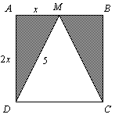

Q. The triangle below has side DC of the square as its base. If DM = 5 and M is the midpoint of side AB, what is the area of the shaded region?

Applying the Pythagorean Theorem yields
x2 + (2x)2 = 52
x2 + 4x2 = 52
5x2 = 52
x2 = 5
x2 = 5
x = √5
Hence, the area of the square is 2x × 2x = 2√5 × 2√5 = 20. Since the height of the unshaded triangle is the same as the length of a side of the square, the area of the triangle is
A =
(2√5)(2√5) = 10
1
2
Subtracting this from the area of the square gives
20 – 10 = 10
The answer is E.